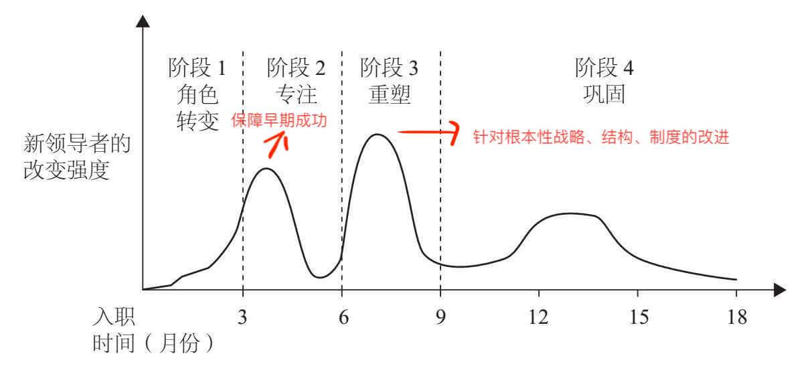
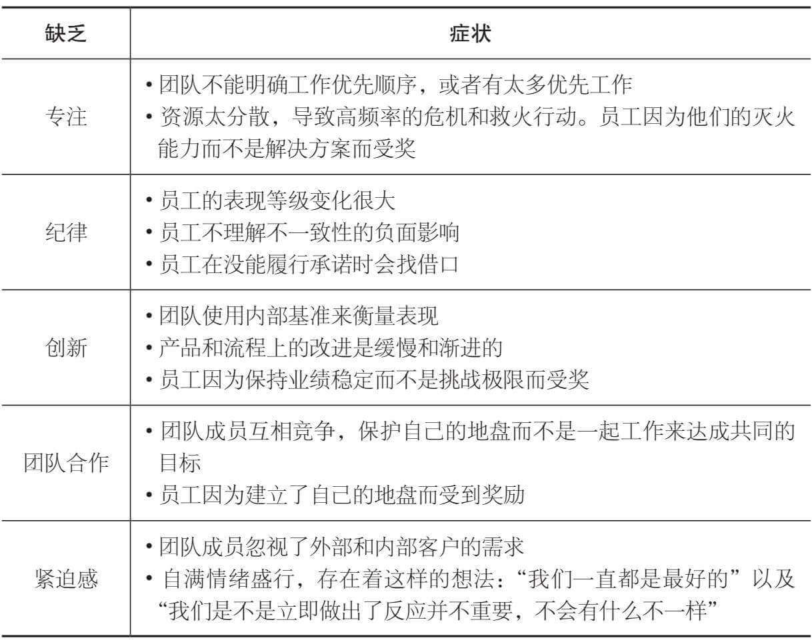
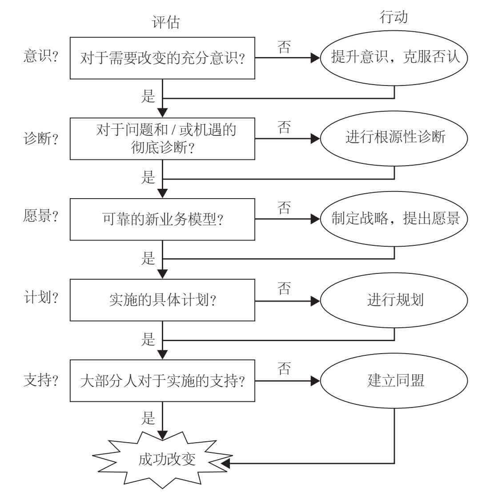
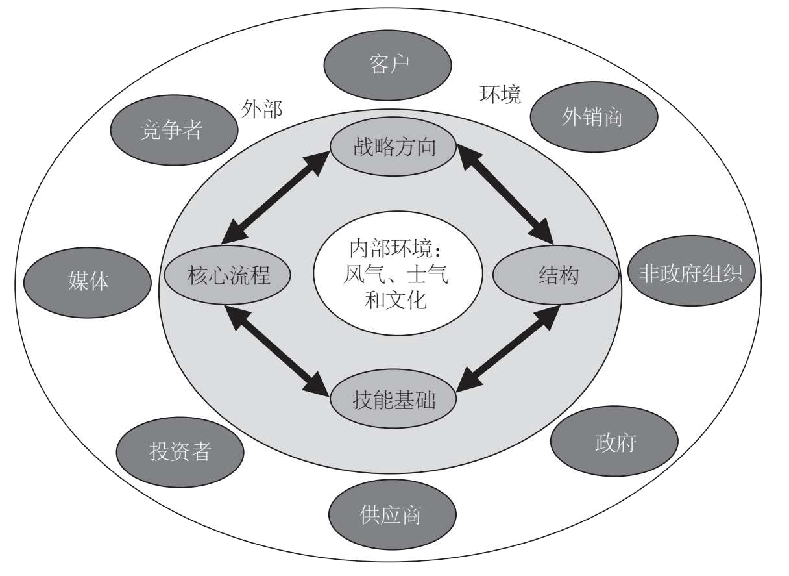
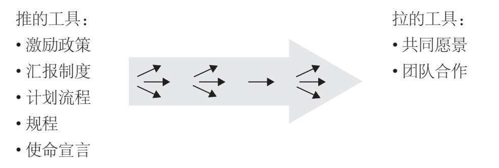
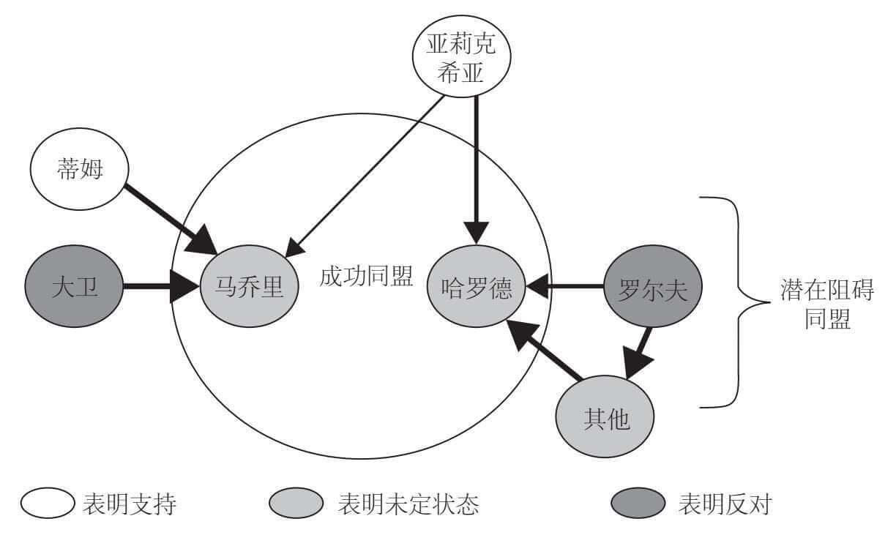
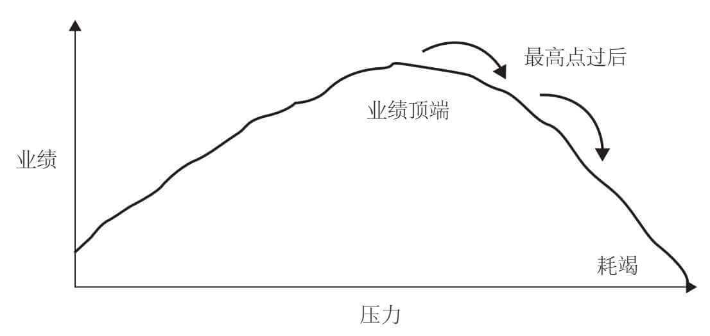

《创始人：新管理者如何度过第一个 90 天》读书笔记（第 5-10 章）
书接上回。
第五章 - 保障早期成功
- 波浪式改进：在规划你的角色转变期（及之后阶段）时，集中做出一波波的连续改变。每一波改变应包含明显的阶段：学习 -> 设计改变 -> 建立支持 -> 实施改变 -> 观察结果。

- 第一波改变在于保障早期成功。新领导者制订早期的计划，以建立个人的信誉，构建重要关系，并确定及达成容易实现的目标 — 组织业绩中最有望短期改善的机遇。要记住早期成功必须有双重用途：它们应当帮助你在短期内建立良好势头，还应为追求长期业务目标奠定基础。
- 第二波改变通常针对更根本性的战略、结构、制度和技能问题，来重塑这个组织，实现组织绩效中更深入的改进。
- 有问题的行为模式：

- 保障早期成功的基本原则：
- 关注少部分有希望成功的机遇；
- 争取那些上司在意的成功；
- 以恰当的方式取得成功；
- 考虑你的 STARS 组合：根据不同的情况定义“早期成功”；
- 调整以适应文化：明确所在组织中什么被视为成功，而什么不是。
- 为了应对从同事变为上司的经典挑战，你需要采用以下原则：
- 接受关系必须改变的事实；
- 尽早关注过渡仪式（指挥棒交接）：最初几天的工作更多的是关于象征意义而不是实质内容的工作；
- 重新征募你的前任（好）同事：关注并找出谁可以继续为你工作，而谁不行；
- 巧妙建立你的权威：你必须在过于或者欠缺自我表达的刀锋边缘行走；
- 关注对业务有益的内容：不懈地、有原则地聚焦于开展对业务有益的工作。
- 早期成功评估表格：每一个候选重点填写一份表格，认真回答评估问题。然后累计所有评估问题得分，将结果作为潜力值的一个大致指标。
| 完全没有 | 很小程度上 | 某种程度上 | 很大程度上 | 非常大程度上 | |
|---|---|---|---|---|---|
| 这一重点工作是否提供了一个在你的单位取得业绩显著提升的机会？ | 0 | 1 | 2 | 3 | 4 |
| 在比较有限的时间里用当下可用的资源是否能够实现提升？ | 0 | 1 | 2 | 3 | 4 |
| 取得成功是否能为实现共同认可的业务目标奠定基础？ | 0 | 1 | 2 | 3 | 4 |
| 实现这一成功的流程是否能够帮助你对于组织内的行为进行必要的改变？ | 0 | 1 | 2 | 3 | 4 |
- 使用 FOGLAMP（雾灯）工具规划项目：
| 问题 | 回答 |
|---|---|
| 重点（Focus）：这个项目的重点是什么？例如，想要实现什么目标或早期成功？ | |
| 监督（Oversight）：你将怎样监督这个项目？还有谁将参与监督，帮助你获得实施成功方面的支持？ | |
| 目标（Goals）：实现它们的目标、当下的时间表和时间框架如何？ | |
| 领导（Leadership）：如果有的话，谁将领导这个项目？他们需要什么样的培训来成功领导？ | |
| 能力（Abilities）：需要包含怎样的技能和代表性？哪些人因为具备相关技能需要参与其中？哪些人因为代表重要的支持团队需要参与其中？ | |
| 方法（Means）：团队还需要哪些额外资源，比如便利，来推动成功？ | |
| 流程（Process）：有没有你想要团队使用的改变模型或结构化流程？如果有，他们怎样熟悉这一方法？ |
- 管理变革的诊断性框架：弄清哪些地方计划和学习流程能够对你的成功产生重要作用。哪些部分通过计划可以最好地解决？哪些部分通过集体学习能够更好地应对？

- 意识：大部分人意识到了改变的必要性；
- 诊断：你知道需要改变什么，为什么需要改变；
- 愿景：你有一个具有说服力的愿景，以及一个坚实的战略；
- 计划：你有制订出具体计划的专业知识；
- 支持：你有充足的得力同盟来支持你的实施。
- 意外可能潜伏的领域：外部环境，客户、市场、竞争者和战略，内部能力，组织政治。
第六章 - 保持组织内部的一致性
- 避免常见的陷阱：
- 为了改变而改变；
- 没有根据 STARS 情境而调整；
- 尝试通过重组的方式解决更深层次的问题；
- 创立过于复杂的结构：
- 高估所在组织接受改变的能力。
- 组织架构要素：组织的四个要素应当保持一致，共同协作。

- 战略方向：组织的使命、愿景和战略；
- 结构：人员在单位内是如何组织的，他们的工作是如何协调、衡量和被鼓励的；
- 核心流程：通过信息和材料的加工来增加价值的制度；
- 技能基础：组织中关键员工团体的能力。
- 组织常见的不一致性：
- 战略方向和技能基础之间的不一致；
- 战略方向和核心流程之间的不一致；
- 结构和流程之间的不一致；
- 结构和技能之间的不一致。
- 修正一个组织的不一致性就像是准备一次远航。首先，你必须清楚你的目的地（使命和目标）和线路（战略）是否正确。然后，你可以找出你需要的船只（结构）、怎样配备它（流程），以及最佳的船员团队都包括哪些人（技能基础）。在整个旅程中，你都要提防没有标示出来的礁石。
- 从战略方向着手：认真地观察和思考，你的组织在更大的组织目标和你们认定的优先工作中被放在了怎样的位置；
- 审视支持性的结构、流程和技能；
- 决定你将会怎样、在何时引入新的战略方向；
- 想清楚正确的顺序：不同的情境（STARS）需要不同的方法来实现组织的一致性；
- 闭合回路。
- 战略方向包含了使命、愿景和战略。使命关于将要实现什么，愿景关于为什么员工会有动力来做出高层次的表现，而战略是关于为了完成使命，资源应当怎样配置、决策应当怎样做出的问题。可以通过审视以下这些方面的连贯性、充分性和实施来评估当前的战略方向是否有问题。
| 角度 | 问题 |
|---|---|
| 客户 |
|
| 资本 |
|
| 能力 |
|
| 承诺 |
|
- 团队结构：
- 就是它组织员工和技术，以支持使命、愿景和战略的方式。包括以下要素：
- 单位：你的直接下属是怎样聚合的，比如通过部门、产品或地理区域；
- 汇报关系和整合机制：汇报和问责的线路是怎样设置以协调各方努力的；不同单位之间的工作是如何整合的；
- 决策权力和规则：谁被赋予了哪种决策的权力；为了保持决策和战略的一致性，必须应用哪些规则；
- 绩效衡量和激励制度：已经到位的绩效评估指标和激励制度。
- 组织结构时可能会出现的问题：
- 组织具有“筒仓”式的优势；
- 员工的决策范围过窄或过广；
- 员工有动力做错误的事情；
- 汇报关系导致了责任的封闭或扩散。
- 可以通过改变架构的方式来逐渐改变文化。
- 评估核心流程的效率：
- 生产力：这一流程是否高效地将知识、材料和人力转化为了价值？
- 时效性：这一流程是否及时地交付了期望中的价值？
- 可靠性：这一流程是充分可靠，还是过于频繁地发生故障？
- 质量：这一流程交付价值的方式是否一贯地满足要求的质量标准？
第七章 - 打造你的团队
- 建立团队时的典型陷阱：
- 批评前任领导；
- 保留现有团队太久；
- 没有平衡稳定性和改变；
- 没有并行处理组织一致性和团队发展的问题；
- 没有把握住好的员工；
- 在核心成员到位之前就开始团队建设；
- 过早地做出了依赖于实施的决策；
- 大包大揽所有事情。
- 评估员工的六个标准：
- 能力：这个人是否拥有完成这份工作的技术性能力和经验？
- 判断力：这个人是否具有良好的判断力，特别是在压力下，或者面临着为了更大的利益需要做出牺牲的情况时？
- 能量：这个团队成员是为这项工作注入了正能量，还是说他处于筋疲力尽或自由闲散的状态？
- 专注度：这个人能够设定优先工作，并且忠于这些工作，还是说他容易在各个方向上分散精力？
- 关系：这个人是和团队中的其他人相处融洽、支持集体的决策，还是难以共事？
- 信任：你是否能够信任这个人，相信他会遵守承诺，并坚持履行承诺？
- 评估员工的标准化流程：
- 认真准备每一次会面：回顾可用的人员历史、业绩数据以及其他评价；
- 创立面谈模板，询问员工同样的问题，观察他们的回答有何不同。常见问题：
- 我们当前战略的优势和劣势是什么？
- 短期内我们面临的最大挑战和机遇是什么？中期又是什么呢？
- 我们可以更有效地利用哪些资源？
- 我们可以怎样改善团队共同合作的方法？
- 如果你处在我的位置，你的优先工作会是什么？
- 寻找言语的和非言语的线索。注意用词、身体语言和敏感问题的选择。
- 注意每个人没有说出来的是什么；
- 这个人的面部表情、肢体动作和他的语言之间是否一致？
- 哪些话题引发了强烈的情感回应？
- 在这些一对一的会议之外，注意到这些人是怎样提到其他团队成员的。
- 发展你的团队：
- 在最初 30 天结束的时候，可以将人员归到以下某个类别中：
- 保持位置；
- 保持并发展；
- 换到另一岗位；
- 替换（低优先级）；
- 替换（高优先级）；
- 留待观察。
- 对于表现糟糕的员工，考虑替代选择：
- 转变他的角色；
- 将他移除于主要工作之外；
- 把他换到组织内其他的岗位上。
- 使用“推”和“拉”工具激励团队：

- 一个振奋人心的愿景具有以下属性：
- 它挖掘到了振奋人心的来源；
- 个人和团体的业绩报酬的各自规模取决于贡献相互依存的程度；
- 它让人们成为“故事”的一部分；
- 它包含鼓动性的语言。
- 传达愿景时的原则：
- 运用磋商来获得承诺；
- 通过故事和比喻来传达；
- 不断巩固；
- 建立传达愿景的渠道。
- 领导你的团队：
- 评估团队的现有流程：探查以下问题。
| 角度 | 问题 |
|---|---|
| 参与者的角色 |
|
| 团队会议 |
|
| 决策 |
|
| 领导风格 |
|
- 将团队流程作为改革目标：
- 变更重要决策会议的参与者；
- 引领决策；
- 如果决策流程可能造成很大的分裂，使团队分成胜者和败者 -> 协商和决策流程，并主导；
- 如果决策实施时需要那些你无法充分观察和控制业绩的人的强力支持 -> 建立共识流程；
- 如果你的团队成员没有经验 -> 协商和决策流程，并主导；
- 如果你负责的团队需要你建立起自己的权威 -> 协商和决策流程，并主导。
- 适应虚拟团队：
- 如果可能的话，尽早把团队聚在一起；
- 建立沟通的清晰规范；
- 明确确定团队的支持性角色；
- 创造一个团队互动的节奏；
- 不要忘记庆祝胜利。
第八章 - 创立同盟
- 理解影响力版图（示例）：

- 绘制影响力图表：
- 中心圈为关键决策者；
- 箭头指向影响的方向，更粗的箭头表示更大程度的影响。
- 三类潜在支持者：
- 对未来和你拥有同样愿景的人。如果你看到了改变的需求，寻找那些在过去推动过类似改变的人；
- 那些一直在静静地小规模推动改变的人，比如说发现了能够显著减少浪费的创新方法的工程师；
- 刚进入公司，还没有适应公司运营模式和文化的人。
- 敌对者的常见抵制目标：
- 满意现状：他们抵制那些可能伤害他们当前位置或改变现有关系的变化；
- 害怕不能胜任：他们害怕如果自己难以适应你所提出的改变会显得无能，之后又表现不佳；
- 对核心价值观的威胁：他们认为你所提倡的文化摈弃了传统的价值定义或者鼓励了不恰当的行为；
- 威胁他们的权力：他们害怕你所建议的改变（例如将更多决策权给一线管理者）会使他们丧失权力；
- 对盟友的负面后果：他们害怕你的目标可能对其他他们在意或认为应该负责的人有负面作用。
- 明确需要影响的关键人物：评估他们的内在动机，评估“情境压力”（因为他们身处的情境而对他们产生作用的推动力和约束力），想一想关键人物是怎么看待他们的替代或选择的。
- 影响力技巧：
- 协商：提倡信息的引入，好的协商意味着进行积极的聆听；
- 设计：以一对一的方式小心地制订你的说服性观点。记住亚里士多德的修辞学三大要素：理性诉求（logos）、情感诉求（ethos）、品格诉求（pathos）。理性诉求是要做出合乎逻辑的论证，使用数据、事实以及充足的依据来建立你的改变案例。情感诉求是要在决策过程中提升你要应用的原则（比如公平）和要信仰的价值观（比如团队合作的文化）。品格诉求是要建立与你的受众之间强有力的情感联系，例如，提出一个鼓舞人心的愿景，说明我们进行合作能够实现怎样的成果。
| 要素 | 问题 |
|---|---|
| 理性诉求 - 数据和充足论据 |
|
| 情感诉求 - 原则、政策和其他“规则” |
|
| 品格诉求 - 情感和意义 |
|
- 塑造选择：影响他人对自己的替代选择的认知；
- 社会影响：他人的观点以及社会规则产生的影响。避免以下事情发生 - 让他人做出的选择与他们的价值观和先前承诺不符、降低他们的地位、威胁他们的名誉或者引发受尊重人士的异议。如果你需要影响的某个人有一个相互矛盾的先前承诺，你应当寻找办法帮助他们优雅地避开；
- 渐进主义：人们不愿意一步到位的时候可以在预期方向上一步一步行动的概念；
- 排序：你去影响他人，在预期方向建立势头的行动顺序要具有战略性；
- 驱使行动发生的活动：让人们不再推迟决策、拖延或逃避对于珍稀资源的承诺。
第九章 - 自我管理
- 结构化反思指南：
| 类目 | 问题 |
|---|---|
| 到目前为止你感觉如何？ |
|
| 目前困扰你的是什么？ |
|
| 什么变好了或者变差了？ |
|
- 潜在障碍行为列表：
- 无防备边界：建立起坚固的边界，确定你愿意做什么、不愿意做什么；
- 脆弱：角色转换期固有的不确定性可能会加剧刚性和防御性；
- 孤立：孤立都会导致在信息不足的情况下做出不当决策，伤害你的信誉，从而进一步强化你的孤立；
- 逃避工作：你在新岗位的早期需要做出艰难的决定。
- 耶克斯 — 多德森人类业绩曲线：

- 自我管理的三大支柱：
- 评估核心挑战，采用 90 天策略；
| 核心挑战 | 诊断性问题 |
|---|---|
| 自我准备 | 你对新工作是否持有正确的心态，是否已经告别过去？ |
| 加速学习 | 你是否弄清楚自己需要学习什么、向谁学习？怎样加速学习进程？ |
| 根据实际情况指定策略 | 你是否诊断了所面临的角色转变类型，以及它对应该做什么、不该做什么的启示？ |
| 通过沟通取得成功 | 你是否正在建立与新上司的关系、管理期望值，并获取了你所需要的资源？ |
| 要事优先 | 你是否关注能够推动你长期目标实现并建立短期势头的优先工作？ |
| 实现一致性 | 你是否修正了战略、结构、制度和技能方面令人失望的不一致性？ |
| 搭建你的团队 | 你是否在评估、重组团队并校准团队的一致性来实现你的目标？ |
| 寻找同盟 | 你是否建立了内部和外部对于你举措的支持基础，这样你就不需要花大力气“推石上山”？ |
- 使用人纪律列表强化个人纪律：
- 计划去做计划：计划 — 工作 — 评估的圆环；
- 将精力更集中于重要的事情上：你每天有没有投入时间去做那些最重要的必要工作？；
- 明智而审慎地推迟承诺：不管任何人要你做什么事的时候，你都可以说：“听起来不错。我想一想，之后再给你回复。”不要在现场就答应。如果你是受到了压力（施压者可能了解你在这样的压力面前的脆弱性），可以说：“倘若你现在就需要一个答案，那我只能说‘不’了；但是如果你可以等等，我会再考虑一下的。”开始时拒绝，之后再接受很容易；开始接受了，之后再改变主意就很困难了（还会损害你的名誉）；
- “上阳台”：从 5 万英尺处评估情况，然后再进行建设性地干预；
- 自省：约束自己对你的情况进行结构性的反思；
- 知道何时应该退出：角色转变是马拉松而不是百米冲刺。
- 建立你的支持体系：
- 在本地展现控制力：让你的新办公室建立起来、明确你对助手的期望，等等；
- 稳定后方：稳定住自己的家庭后方，这样你就能够在工作中投入足够的精力。
第十章 - 加速每一个人的转变
- 公司加速员工角色转变的十个原则：
- 确定关键的角色转变；
- 确定“注定失败”的动态；
- 诊断现有的角色转变支持措施；
- 采用一个共同的核心模型；
- 提供及时的支持；
- 使用结构化的流程；
- 根据角色转变类型来配置支持；
- 根据领导者的级别配置角色转变期的支持；
- 明确角色并实现激励政策的一致性；
- 与其他人才管理制度的整合。
一些职场厚黑学
- 同样劳动量的工作，价值并不等同；
- 无能的主管可能是更高一层老板用来牵扯或防范能力出众主管的棋子；
- 高管对主管在部门中所做的工作，只了解其中的 30%，另外 70% 工作对企业发展来说可有可无；
- 在企业内部，主管更重要的工作是控制那些能力过强的员工，使其行进速度不可随心所欲的过快，以免将整个部门丢在后面。管理的艺术就是取得平衡的艺术；
- 政则正也，所谓政治，就是公正的做事，正确的做事，做正确的事（高价值）。政治意识决定了职场中的地位高低；
- 有能力的加以拉拢，不服从的加以分化；
- 决定一个团队内部氛围的，取决于那个素质最差的员工；
- 上下级之间，是以利益为框架的是非原则；
- 成功的企业领导者都是口是心非的双重人格，他们口口声声信奉人本主义，却是 “X 理论”（将人性假设为厌恶工作，逃避责任）的坚定执行者；
- 上下级之间，先谈利益，再谈交情；
- 主管的十大阴谋：
- 制造竞争对手：使用能力与你相近的同事克制你；
- 制造矛盾：将同事对你工作方面的意见说成是对你个人的意见，并传递回你的耳朵；
- 安排垃圾工作：将你变成垃圾员工；
- 设置陷阱工作：用最棘手的工作将你打垮；
- 员工缺陷养成：培养你的缺点，让你沦为低级动物；
- 员工依赖感养成：主管对你偶尔犯下的小过失横挑鼻子竖挑眼，打击你的工作积极性，让你不敢轻易下决断；
- 以愚困智：把在某一方面能力不足与在此方面能力强的员工组合在一起，形成彼此的困扰；
- 用人所短：使用员工的“短处”与不足，迫使你成为最缺乏能力的“老鼠”；
- 用人所长：拼命使用你某一方面的特长，压制你全面能力的发挥；
- 诋毁部下的“领导能力”：肯定其工作能力，但通过巧妙安排几个小陷阱，用最不具有合作意识的同事与部下发生冲突来证明其缺乏领导能力。
评论 | Comments